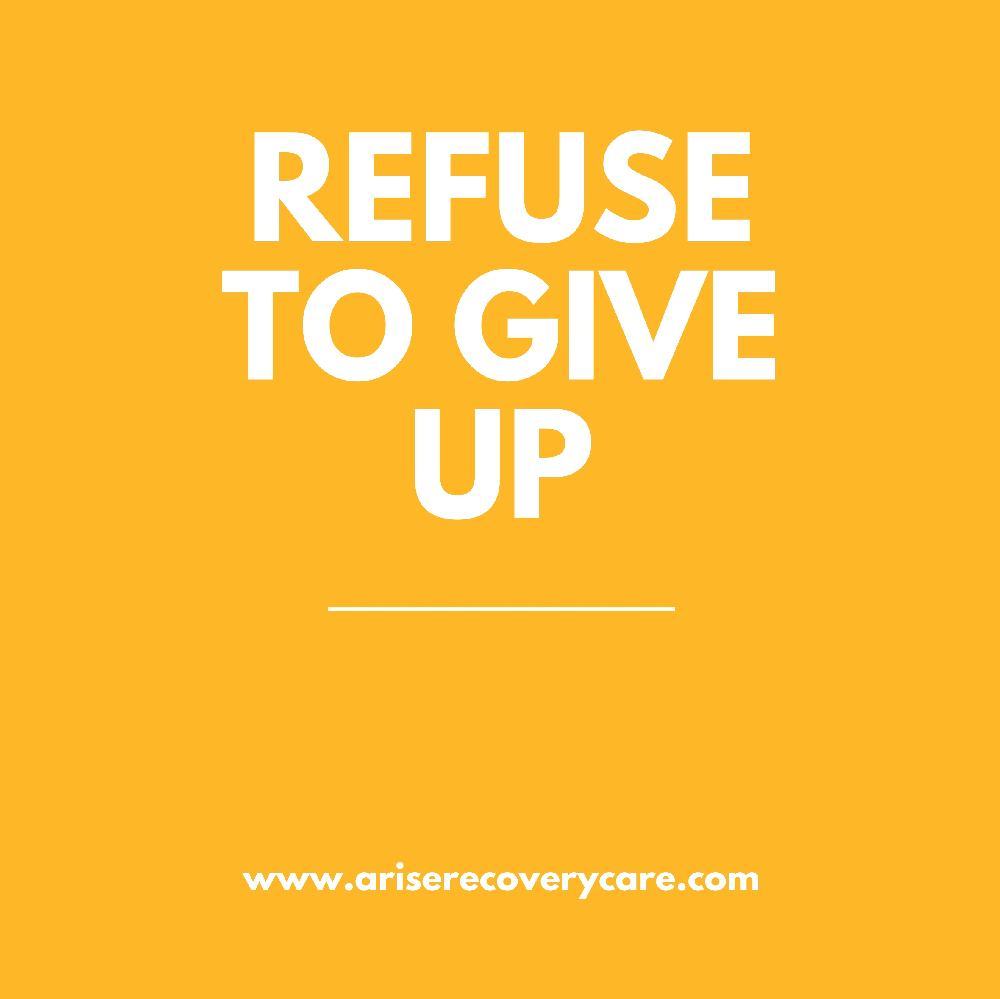
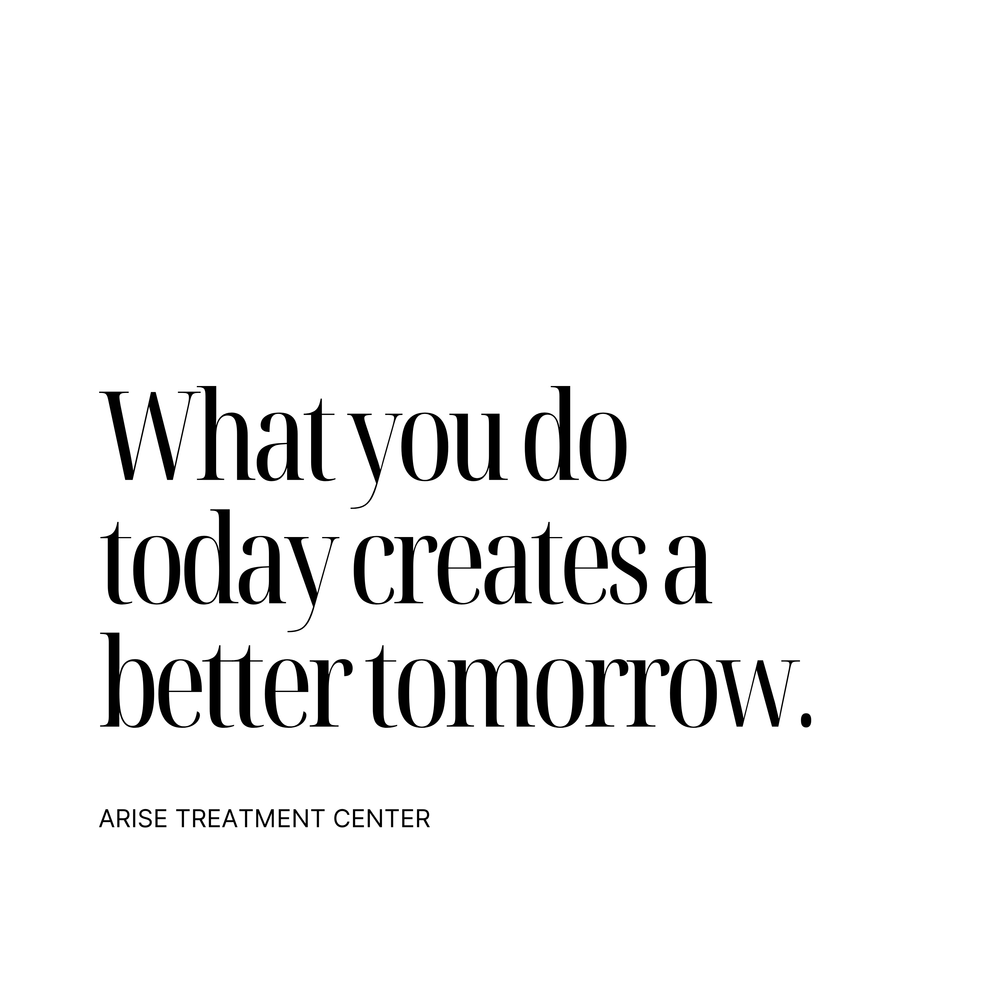

ARISE TREATMENT CENTER
[ABOUT]
The goal of Arise’s social media presence was to create a clean, modern, and easily digestible visual identity that both motivates and informs. Each post was intentionally designed to reflect the organization’s mission while remaining approachable and consistent across platforms. By incorporating curated quotes through Canva alongside custom edits and original brand photography, the content strategy emphasized clarity, emotional connection, and brand recognition. The result is a cohesive social media presence that communicates Arise’s values while building trust and engagement with its audience.



